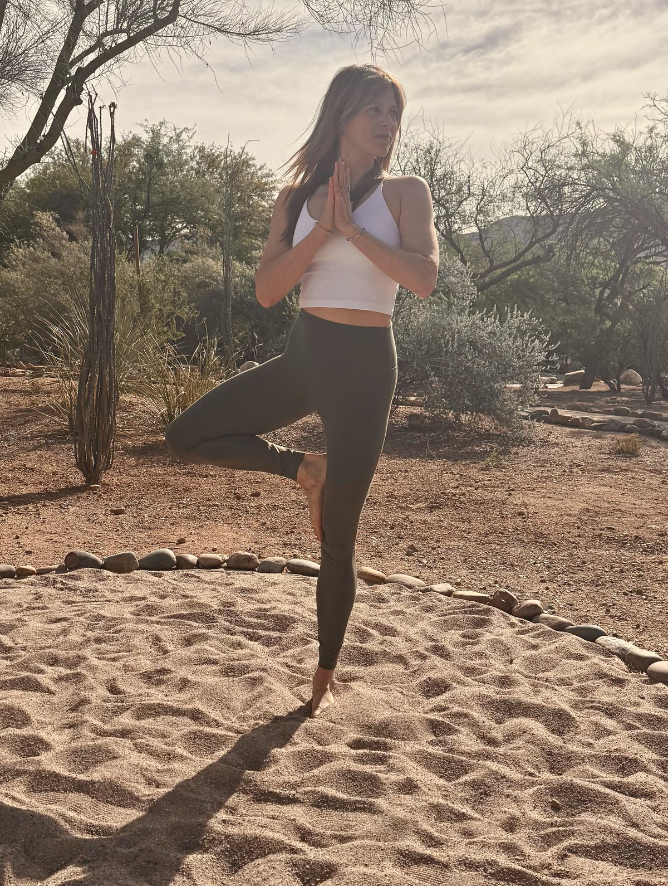
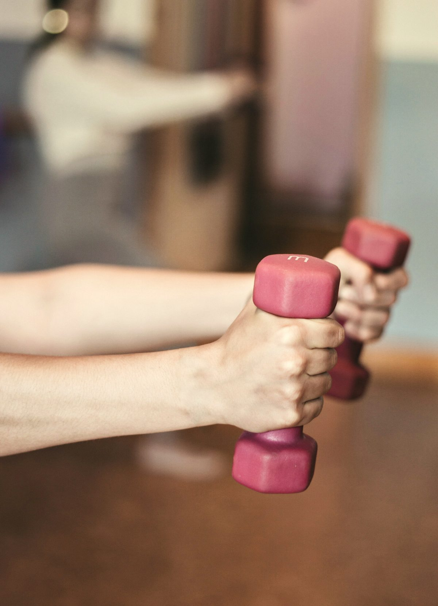
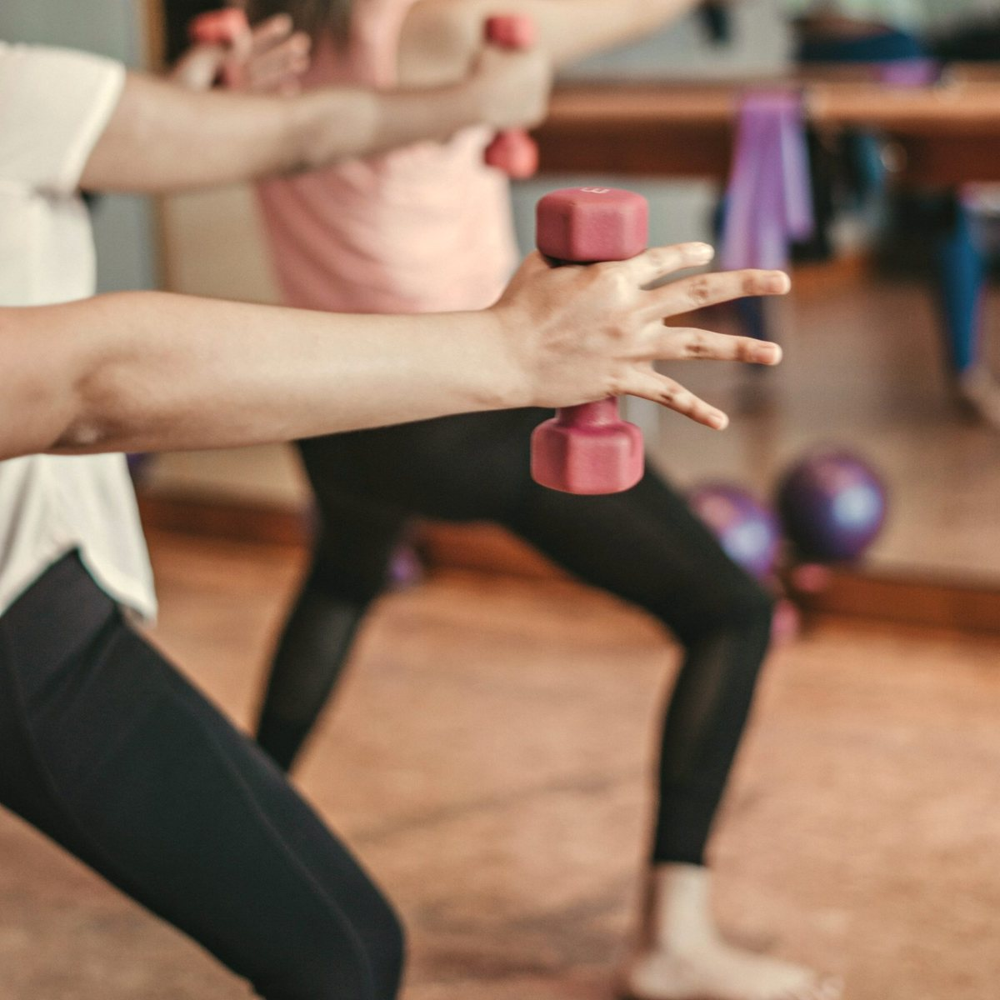
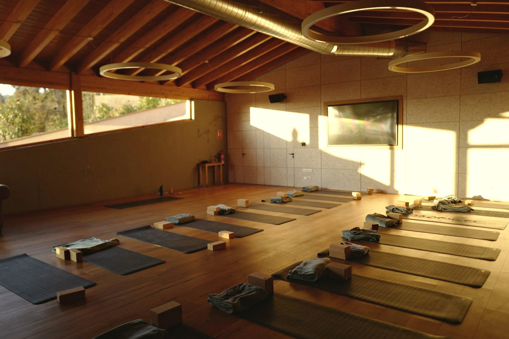
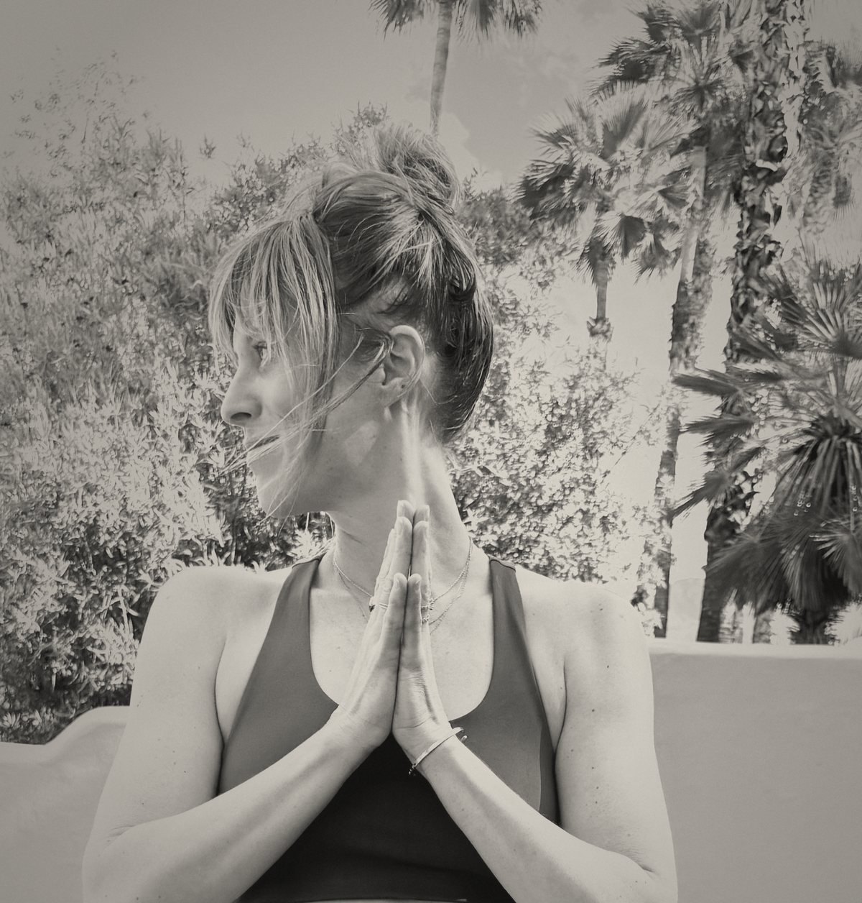
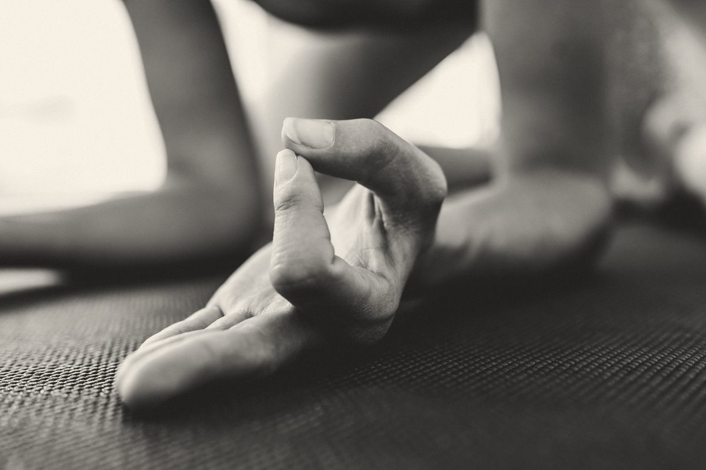
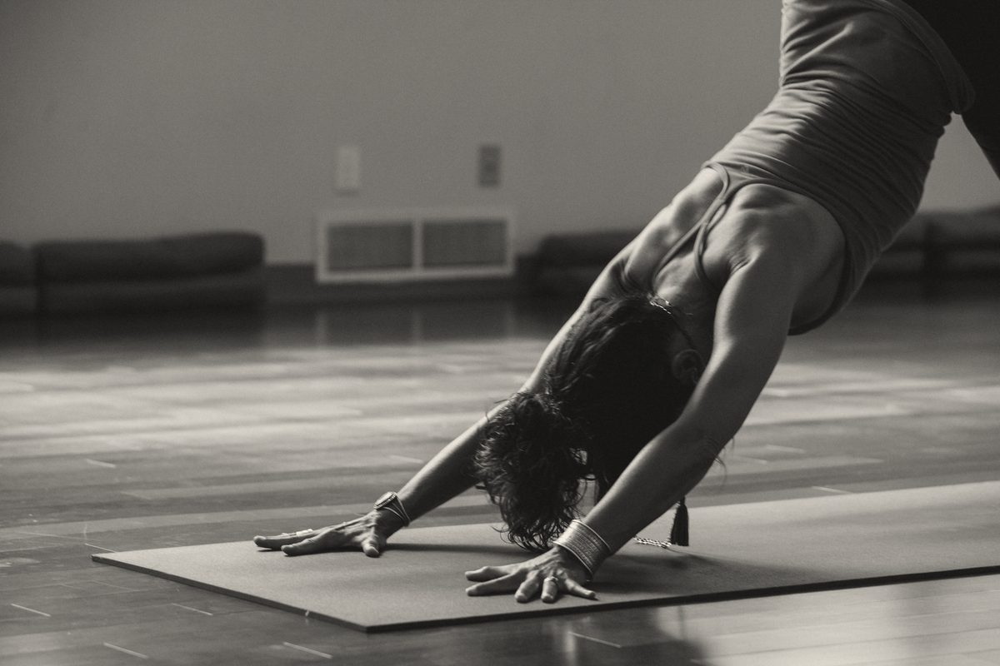
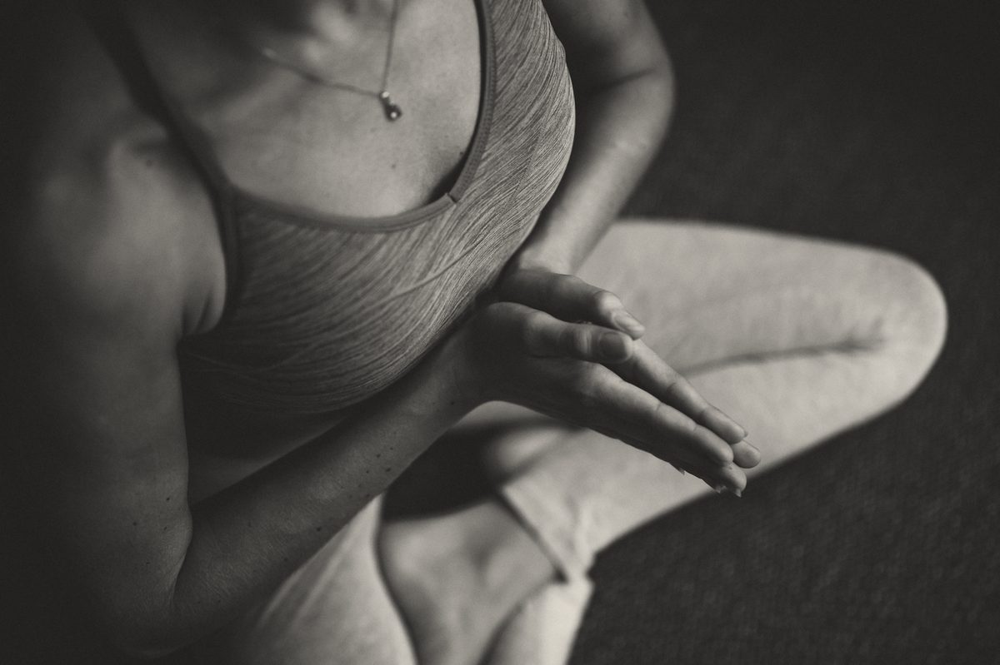
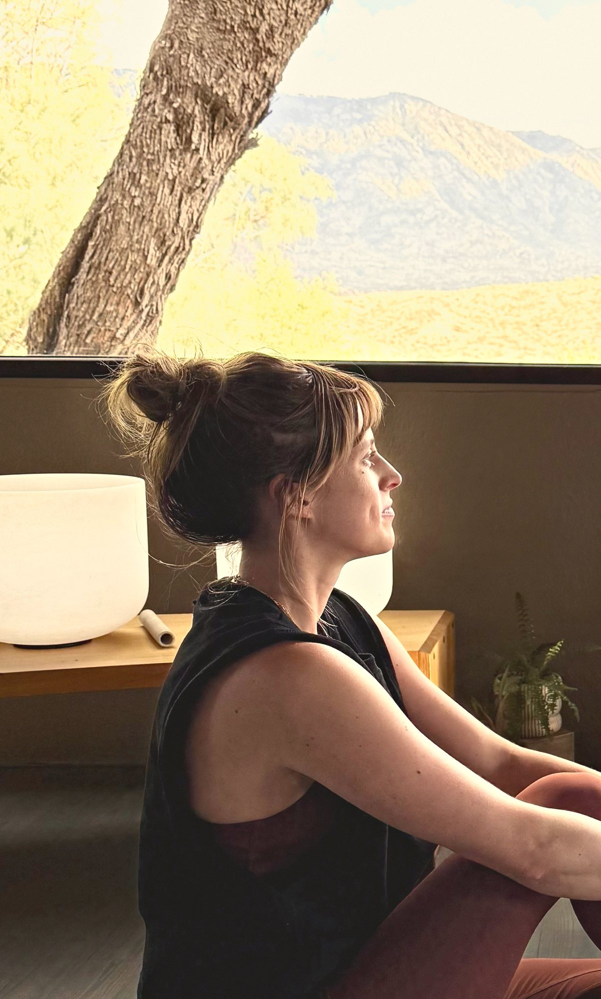
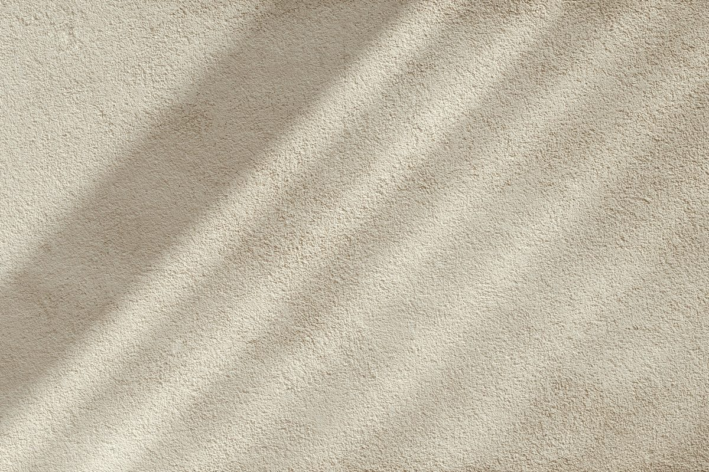

WellGrounded
With Mariah Marcum. Yoga with weights, and prenatal yoga, in Columbus, Ohio.
Book a class by emailSteady on your feet, and built on good evidence.
Yoga already trains balance, range and attention. Add weight and you give it the one thing it is short on: load. Carried carefully, load builds the strength you use to stand up, pick things up and carry what matters, for decades. Classes are planned from current exercise research and guidance, with options for every body.

Classes
No experience with weights is needed. Every pose has a way to scale it up or down, and you choose a load you can control for every rep with steady breath.
Bring comfortable clothes, water and bare feet. Mats, blocks and a range of dumbbells are provided, so you can start light and go heavier as you get stronger. Rates depend on the format, the group and the place.
Small-group classes
Yoga with dumbbells for a small group, so there's room for hands-on cueing and options. Each class builds toward one peak pose and one strength pattern.
Private sessions
A plan built around your body, your history and what you want to be able to do, from getting up off the floor with ease to lifting your kids without thinking about it.
Prenatal series
Strength, breath and ease for each trimester, following current exercise guidance for pregnancy, with a clear plan for what to skip and when.
Workshops
Two hours on a single pattern: how it works, how to warm up for it and how to load it well.
Schools and workplaces
Classes brought to you, for staff, parents or teams, scaled for whoever shows up.
Upcoming classes
Checking the live schedule
Booking opens the studio's own page, where you can reserve a spot or join the waitlist. For private sessions, workshops or a class for your school or workplace, write to Mariah.
This class is not only a lot of fun, but really is a nice challenge to those practicing yoga. Mariah pushes you to try hard without overwhelming you or making you feel uncomfortable.

Six patterns, one body.
Every move in class trains one of six patterns: the same ones you use to stand up, pick up a child, climb the stairs and carry the groceries in.
Squat
Standing up from a chair, a car seat or the floor.
Hinge
Picking up a laundry basket, a suitcase or a child.
Lunge
Stairs, curbs, and getting down to the floor and back up.
Push
Getting up off the floor, lifting a bag into the overhead bin.
Pull
Opening a heavy door, drawing a child up into your arms.
Carry
Groceries from the car, a toddler on one hip.

Small groups, warm rooms, and weights that grow with you.

Prenatal
Strength for carrying, and for what comes after.
Prenatal yoga with light to moderate weights, breath and plenty of support, following current exercise guidance for pregnancy. With your provider's okay, any trimester can work.
- First trimester Keep your routine. The plan bends around how you feel that day, with effort kept to a level where you can still talk.
- Second trimester Make room. Wider stances, blocks and a wall for balance. Lying flat on your back gives way to inclined and side-lying options.
- Third trimester Prepare. More support, shorter holds and practice for birth: upright and forward-leaning positions, hands and knees, and breathing that lets the pelvic floor soften.
Talk with your provider before you start, and bring their okay to your first session. Classes are not heated.
Ask about the next series by emailThe method
The same arc in every class, so you always know where you are.




Mariah Mae Marcum
Mariah teaches yoga with weights and prenatal yoga in Columbus. Her classes pair yoga's attention to breath and alignment with the strength patterns your body uses every day, at a pace that puts safe movement first.
Plain cues, a calm room and options for every body. You'll hear which muscles are working and why, and you'll always know what to feel, what not to feel, and when to stop.
- Teaching
- Since 2021
- Training
- Yoga teacher training and mentorship, RYT-200. 25-hour prenatal yoga certification, 2024.
- Based in
- Columbus, Ohio
Good to know
Do I need experience with yoga or weights?
No. Every pose has a simpler version, and you'll learn each strength pattern without weight before you add any.
How heavy do the weights get?
You start with a load you can control for every rep with steady breath, and go heavier as you get stronger. There's a range of dumbbells for every level.
Will it be hard?
It should feel challenging but controlled, about a 6 or 7 out of 10. You should always be able to breathe and talk in short sentences.
Is it safe if I have an injury or a health condition?
Often, with changes. Check with your clinician first and let Mariah know before class. Some conditions call for a private session to start.
Can I practice while pregnant?
Usually yes, with your provider's okay, in any trimester. You'll start with body weight and light loads and adjust as you go. Your provider has the final word.
What about after the baby comes?
Gentle breath and pelvic floor work can begin early, with your provider's okay. A return to loaded strength work comes gradually, often with input from a pelvic floor physical therapist.
How do I book?
For studio classes, choose a class under Upcoming classes and book it on the studio's page. For private sessions, workshops or a class for your school or workplace, write to Mariah.

Book a class
Small groups, private sessions and prenatal series in Columbus and nearby. Write with what you'd like to work on and the days that suit you. Mariah replies within two business days.
Please leave health details out of email. You'll share those privately before your first session.